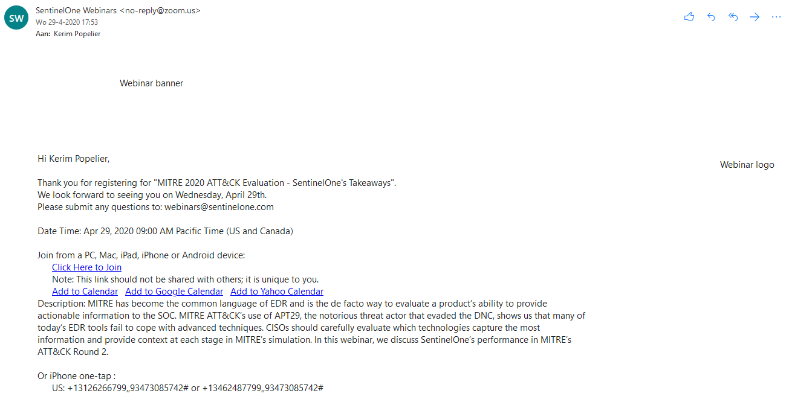

MITRE 2020 ATT&CK Evaluation - SentinelOne's Takeaways
Date and duration:
29 April 2020
18:00 - 20:00
Proof:

Description
Dit was een event die ik kon bijwonen door mijn stage. Er werd gesproken over hoe SentinelOne het gedaan heeft in de Mitre 2020 Attack Evaluation ten opzichte van andere systemen. SentinelOne is een endpoint protection die werkt met AI om zo threats te detecteren. Het was op zich niet heel interessant omdat ik door mijn stage al de kracht van dit platform kende, maar het was wel goed om te zien dat ze ook deelnemen aan deze events en dat ze goed scoren.